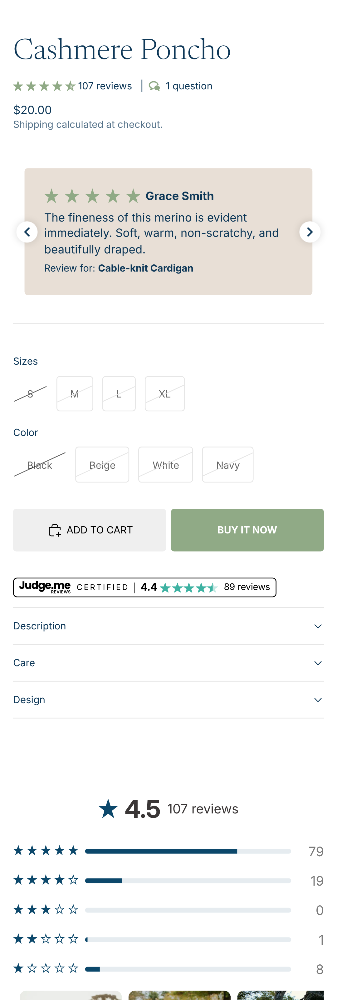

Die Reihe
Eine Shopify-App,
ein Problem
Deine Kunden
unsichtbar
Die App dafür
Judge.me
passt
Nach dem Kauf
nach dem Kauf
Im Shop anzeigen
Dein Shop
direkt
Judge.me Demo-Shop
DEMO

Sterne
auf der Produktseite
Bewertungs-
bereich
Neue Besucher
?
?
?
unbekannt
Vertrauen aufbauen
Vertrauen
ABER.
Wichtig
authentisch
Was überzeugt?
Badges
Bewertungen
echt
Folgen
Folgen